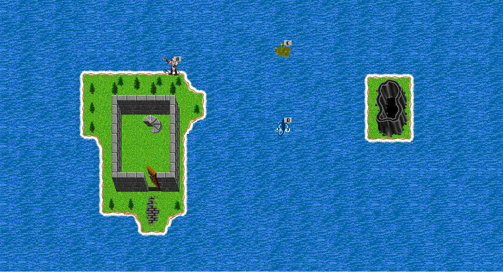

| The Frore Waterplains | ||||||||
 |
||||||||
| I hope you can swim after that fall.. Several aquadic species flourish in the underground lake. Most come here for the geological minerals that can only be found here. A Crystal containing water is the most sought after. | ||||||||
| Back to Frore. | ||||||||